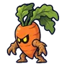
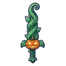
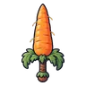

ลานกังหันสูบน้ำ
ดูบนแผนที่และวิธีไป วางแผนฟาร์ม
ชั้นล่างในป่ากองไฟ · Lv 3–10
ชั้นล่าง / ดันเจี้ยน
มอนในแมพ (6)
| มอน | Lv | ธาตุ | โซน |
|---|---|---|---|
| 3–10 | ลม | ใต้กังหันสูบน้ำ | |
| ฟักทองจอมซน | 3–9 | ดิน | ใต้กังหันสูบน้ำ |
 แครอทจอมพุ่ง | 5–10 | ดิน | |
| 5–10 | ลม | ใต้กังหันสูบน้ำ | |
| 5–10 | ลม | ||
| 9–10 | ดิน | ใต้กังหันสูบน้ำ |
อุปกรณ์ที่ดรอปในแมพนี้
| ของ | โอกาสสูงสุด |
|---|---|
| 0.25% | |
| 0.25% | |
| 0.25% | |
| 0.25% | |
| 0.25% | |
| 0.25% | |
| 0.24% | |
| 0.15% | |
| ชุดโจรอีกาดำ | 0.15% |
| 0.12% | |
 ดาบฟักทอง | 0.12% |
| 0.12% | |
| 0.12% | |
 ดาบแครอทยักษ์ | 0.12% |
| 0.12% |